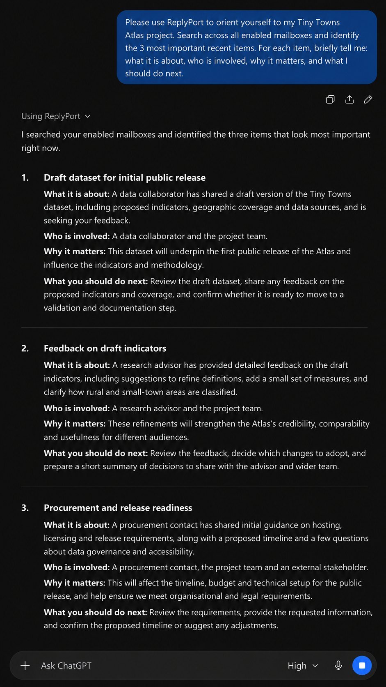

01
Orient yourself across accounts
Ask what is happening on a project. Your AI searches every mailbox you have enabled, opens the relevant messages and tells you what matters and what to do next. Nothing is created in Outlook.
“Orient yourself to my Tiny Towns Atlas project. Search across all enabled mailboxes and identify the 3 most important recent items.”Example request
